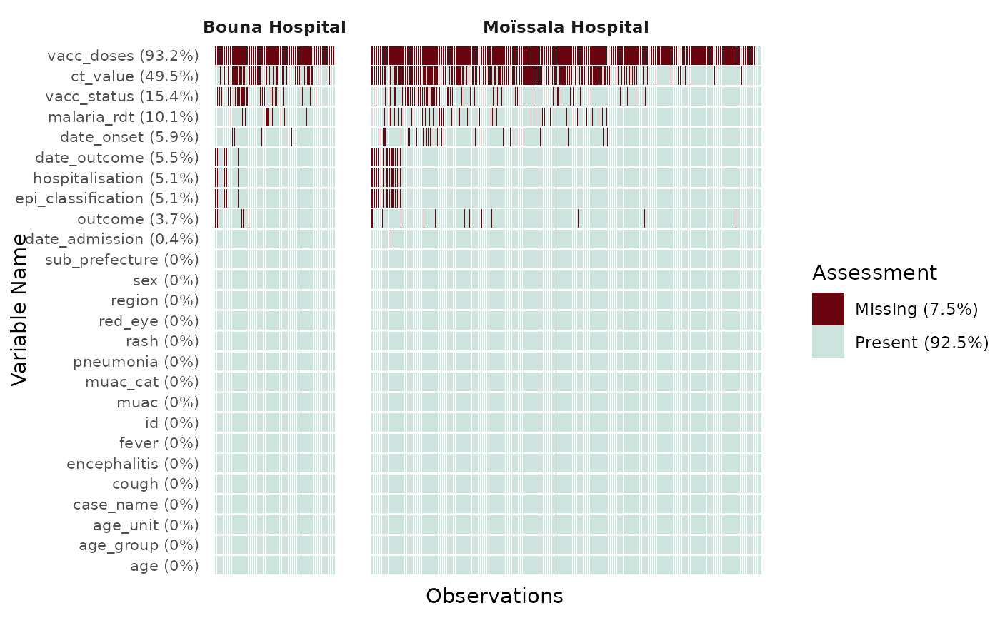

Function to generate a tile plot exploring the missing values for all observations across all variables of a dataframe.
Usage
plot_miss_vis(
x,
facet = NULL,
col_vec = c("#6a040f", "#cce3de"),
y_axis_text_size = 8
)Examples
# Use simulated measles data
suppressMessages(library(dplyr))
epivis::moissala_measles |>
filter(site %in% c("Moïssala Hospital", "Bouna Hospital")) |>
plot_miss_vis(facet = "site")
